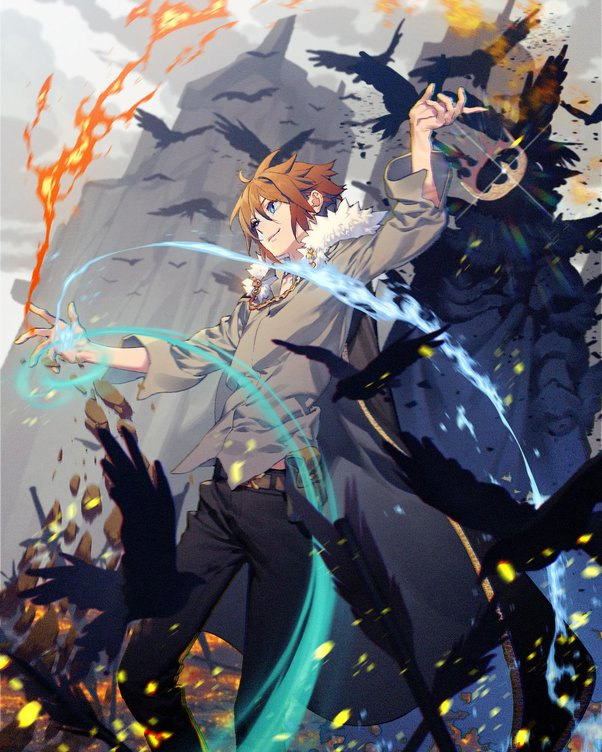

Arthur Leywin, renascido como aumentador, possui uma ampla gama de habilidades mágicas e de combate:
- Maestria Elemental: Como Quadra Elemental, ele pode manejar Água, Fogo, Vento e Terra. O domínio do Fogo e da Água permite que ele use formas avançadas como Relâmpago e Gelo. Ele também comanda a magia da Gravidade com Realmheart.
- Proezas de Combate: Outrora um grande lutador em sua vida passada, Arthur inicialmente teve dificuldades devido ao seu corpo mais jovem. Após um treinamento rigoroso com Kordri e foco em sua esgrima, ele aprimorou suas habilidades físicas e de combate a um nível excepcional.
- Beast Tamer: Com a vontade de dragão de Sylvia, Arthur utiliza poderes como Static Void, Realmheart e uma fase mais avançada de integração.
- Técnicas Avançadas:
- Mirage Walk: esconde sua presença de mana para ficar invisível.
- Burst Step: Um movimento de curto alcance e alta velocidade ao custo de danos nas pernas.
- Static Void: Congela temporariamente o tempo, embora não afete outros com habilidades de éter semelhantes.
- Realmheart: transforma-se em uma forma de dragão para melhorar a utilização de mana e ver todo o mana e éter ao seu redor.
O extenso treinamento e diversas habilidades de Arthur fazem dele um lutador e mago formidável.